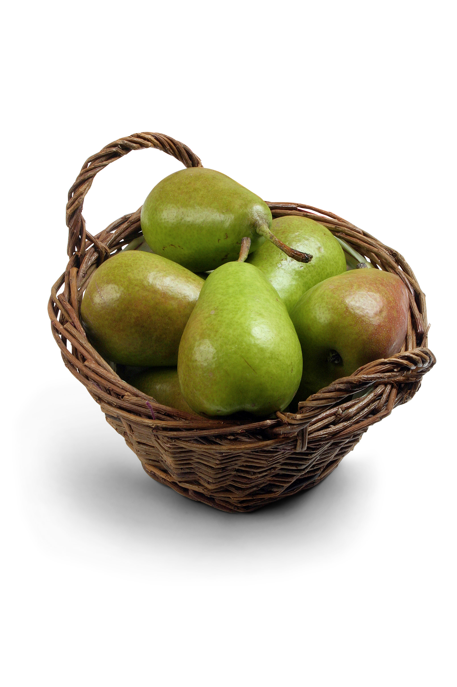

DIETA DE ARROZ Y FRUTA

No debe prolongarse el seguimiento de esta dieta durante más de un mes.
No debe prolongarse el seguimiento de esta dieta durante más de un mes.
Es preciso cocinar 300 gramos de arroz integral a diario ya que es la cantidad de arroz que se va a consumir durante toda la jornada. Para poder cocer el arroz integral es preciso lavarlo y escurrirlo en una olla hermética con tres cantidades más de agua fría. Hay que dejar hervir este arroz a fuego lento durante 5 minutos hasta que el agua se evapore por completo.
Para condimentar el arroz, trata de emplear la sal, pero para las frutas si puedes utiliza la miel, el azúcar moreno o un poco de canela.
Esta dieta no se puede realizar por más de 30 días.
1 jugo de naranja o manzana o pomelo.
1 plato de arroz con miel
Frutas cortadas en rodajas, excepto plátano y frutos secos.
1 plato de arroz con canela, ciruelas y pasas
1 manzana o la fruta de estación al gusto.
1 pieza de fruta distinta a la de la merienda y, en caso de seguir con hambre, comer un plátano